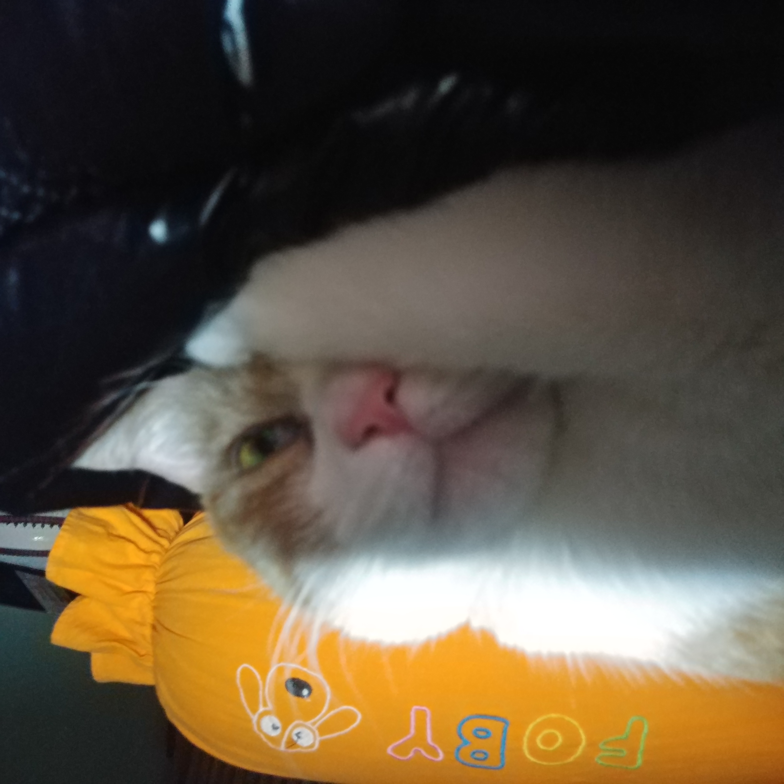
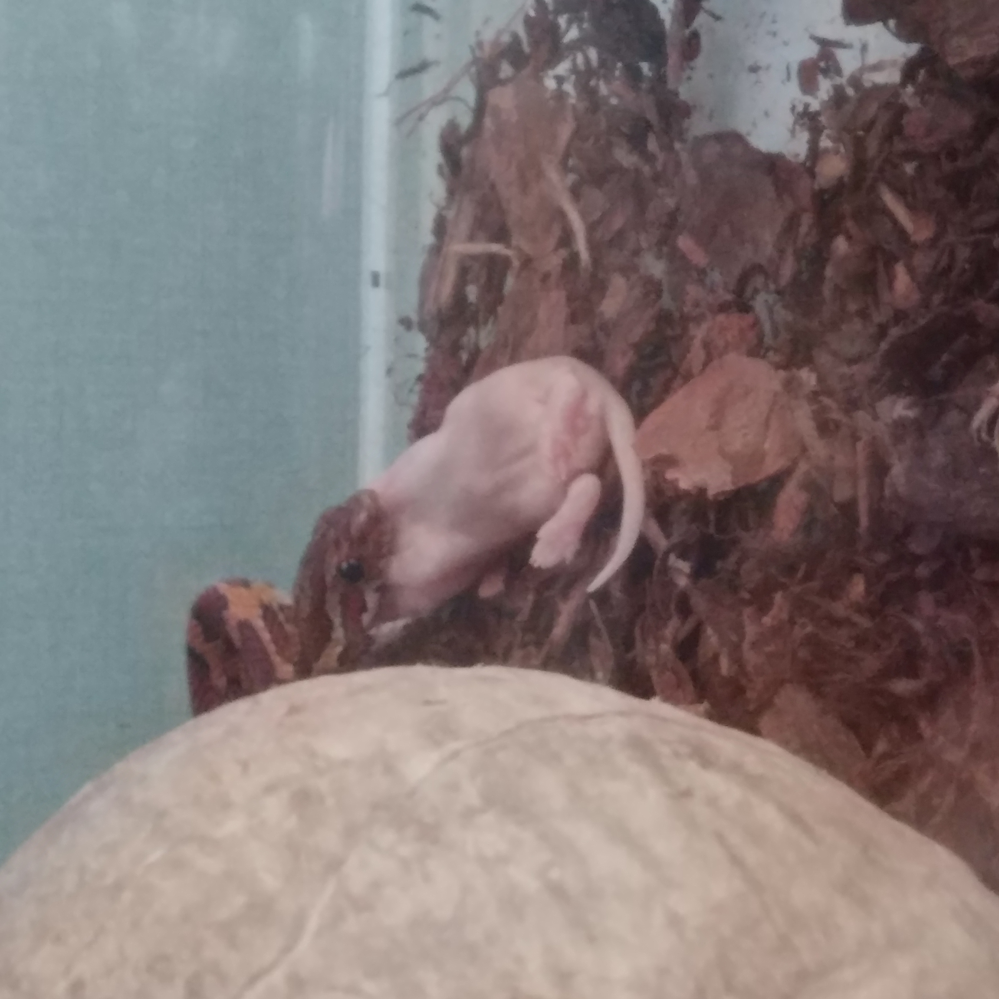

애완동물 정보
빙고
입양 계기
고양이인 빙고는 내가 고등학생 17살에 처음 우리집에 왔으니 한 집에서 산지 9년이 되었다. 빙고는 코리안 숏헤어이며 쉽게 말해서 잡종이다. 빙고가 우리 집에서 살게 된 계기는 아버지의 지인이 기르는 고양이가 새끼를 낳아 새끼중 한마리를 집으로 대리고 온 것 이었다.
성격
빙고의 성격의 매우 예민하고 사회성이 없다. 동물의 사회성은 어릴 때 길러진다고 한다. 어릴때 많은 사람들과, 동물을 만난 동물은 커서도 시림과, 다른동물을 봐도 무서워하지 않으나 사회성을 기르지 못한 빙고는 매우 예민하다.
오롱이
입양계기
어릴때부터 나는 뱀이가장 좋아하는 동물이었다. 일반적으로 사람들이 키우는 강아지나, 고양이등의 포유류와 다른 매력을 느꼈기 때문이다. 뱀이 움직이는 것을 티비에서 볼때 마다 생명의 신비함을 느꼈고 언젠가 꼭 키우겠다고 다짐했다. 그러나 부모님의 반대에 부딛혔고 군대를 재대 하고서야 전역 선물로 뱀을 기를 수 있었다.
성격
오롱이는 매우 활발하고 먹성이 좋다. 뱀은 2주에 한번씩 먹이를 먹는게 일반적이지만 엄청나게 밥을 많이먹는 오롱이는 일주일에 한번씩 밥을먹는다. 성격은 매우 온순하여 아직 한번도 주인을 물어본적이 없다.
다롱이

입양계기
오롱이를 키우다 보니 보다 큰 뱀을 키우고 싶었다. 그래서 동물원에서 일반적으로 보여주는 뱀을 키우기로 했다. 그래서 볼파이톤인 다롱이를 입양했다. 그러나 입양과정에서 난관이 많았다. 왜냐하면 볼파이톤은 멸종위기종이기에 사이테스 서류가 필요했기 때문이다. 그래서 서류까지 기다리고 사유장 인증까지 마친 후 키울 수 있었다.
성격
다롱이는 나를 싫어하는 것 같다. 자꾸 탈출해서 자취방에서 2주간 숨어있다가 나온적도 있다. 성격은 매우 소심해서 만지면 몸을 말아버린다. 이러한 습성때문에 볼파이톤 이라는 종이다. 몸을 자꾸 볼처럼 만다는 뜻이다.